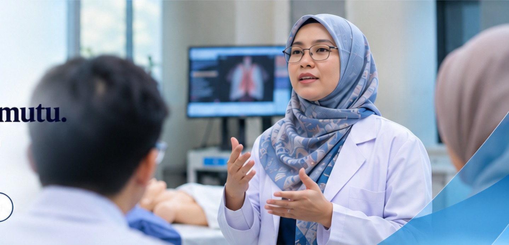
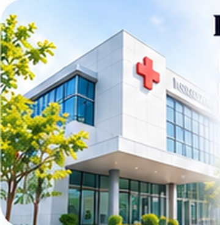

PENGEMBANGAN KOMPETENSI TENAGA KESEHATAN
Kompetensi yang Berkembang. Layanan Kesehatan yang Lebih Bermutu.
Pelatihan, workshop, bimbingan teknis, dan event profesi untuk meningkatkan kompetensi, profesionalisme, dan kualitas layanan tenaga kesehatan.

Event Management
Solusi terpadu untuk penyelenggaraan seminar, workshop, dan webinar tenaga kesehatan yang profesional dan terukur.

Pelatihan untuk Institusi
Program in-house dan kustomisasi pelatihan untuk rumah sakit, Puskesmas, klinik, dan institusi lainnya.
Program Unggulan RLC
Pilihan program pelatihan yang relevan dengan kebutuhan tenaga kesehatan saat ini.
Nama program dan jadwal adalah konten demonstrasi prototipe, bukan program resmi yang sedang dibuka RLC.
Empat Jalur Layanan untuk Pengembangan Pendapatan
Model layanan yang dapat dioptimalkan untuk memperluas jangkauan dan meningkatkan revenue RLC.
Pelatihan Publik
Program terjadwal untuk peserta individu dari berbagai profesi kesehatan.
In-house Training
Pelatihan khusus untuk kebutuhan tim di rumah sakit, Puskesmas, dan institusi kesehatan.
Workshop & Bimtek
Program tematik dan bimbingan teknis sesuai kebutuhan pengembangan layanan.
Konten Pembelajaran
Pengembangan materi digital (learning content) untuk pelatihan berkelanjutan.
Tentang RLC
Rifdaira Learning Center adalah pusat pengembangan kompetensi tenaga kesehatan. Teks bagian ini adalah konten demonstrasi dan perlu diganti dengan profil resmi RLC.